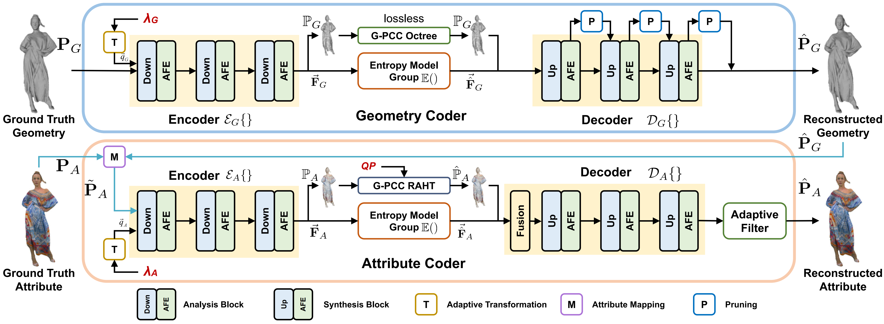

A layered point cloud compressor, YOGAv2, is proposed to efficiently encode colorful and relatively dense object point clouds vastly used in Augmented/Virtual Reality (AR/VR) applications. It is flexible, capable of compressing geometry and attribute information, separately and jointly, in pursuit of optimal quality under any given bitrate budget; it is high-efficiency, significantly outperforming the latest G-PCC standard quantitatively and qualitatively, e.g., more than 30% BD-BR gains using PCQM (Point Cloud Quality Metric) to assess superimposed geometry and attribute artifacts; and it is lightweight, e.g., presenting similar runtime as the G-PCC codec and just desiring a single neural model for encoding each component, which owes to parallel entropy coding and variable-rate support. T o this end, YOGAv2 develops a unified compression backbone for separate geometry and attribute compression. The backbone uses a two-layer structure, where the downscaled thumbnail point cloud is encoded using G-PCC at the base layer. Upon G-PCC compressed priors, sparse convolutions are stacked in a multiscale manner under an end-to-end variational autoencoder (VAE) framework at the enhancement layer to compactly represent the full-resolution sample.
|
|
|
|
|
|
|
|
|
|
|
|
|
|
|
|
Abstract
Overview
A Layered Point Cloud Compressor
Separate geometry and attribute coder with accurate rate control, where lossy attribute compression is conditioned on reconstructed geometry through nearest-neighbor mapping (M).
Two-pass Rate Control
Two-pass rate control where pre-encoding is applied to determine parameters of R-D models for deriving λG or λA under any given bandwidth budget RT in compression.
Unified Compression Backbone
A two-layer unified compression backbone used in respective geometry and attribute coders. The base layer uses G-PCC to encode the (downscaled) thumbnail point cloud. Upon the base layer reconstruction, the enhancement layer applies an end-toend V AE to embed local neighbors in a multiscale manner.
Contribution
High Flexibility. YOGAv2 is flexible, enabling the lossy compression of geometry , attribute, and their combination at any given bitrate and facilitating network-friendly scalable streaming through a layered design. At the same, YOGAv2 offers backward compatibility to enjoy well-engineered techniques in standard-compliant G-PCC.
High-Efficiency. YOGAv2 significantly improves the compression
efficiency compared with G-PCC
and even outperforms V-PCC.
1) Quantitatively , when both geometry and attribute are lossily encoded, YOGAv2 outperforms
G-PCC by more than 80% BD-BR (Bjøntegaard Delta Rate) for geometry coding only , around 10%
BD-BR for attribute coding only , and more than 30% when compressing geometry and attribute
together.
2) With dedicated subjective user studies from two independent parties, YOGAv2 consistently
delivers superior qualitative quality compared to V-PCC, providing closer reconstruction to
the ground truth.
Low Complexity. YOGAv2 presents a comparable runtime to the G-PCC, owing to the use of sparse convolution and parallel entropy coding. And using the variable-rate model in YOGAv2 makes it practically affordable concerning space complexity.
Compression Backbone
Framework of the unified compression backbone in YOGAv2 for separate geometry and attribute coding.
Rate Control Strategy
Given a total bandwidth budget RT, YOGAv2 adopts a content-aware two-pass rate control to determine the respective bitrate portion of geometry (RG) and attribute (RA) of a point cloud for the maximization of overall compression performance measured using rate-distortion (R-D) metrics. The widely recognized PCQM metric is applied to assess the superimposed distortion from compressed geometry and attribute information. At the same time, we formulate analytical rate and distortion models for geometry and attribute components as functions of their corresponding controlling factors, i.e., λG and λA, and apply a pre-encoding step to perform the content-aware analysis for determining model parameters, which enables accurate and effective rate control subsequently.

Rate Control Efficacy
We compare brute-force Full Search Mode and the proposed Analytical Prediction Mode to quantify the efficacy of rate control in YOGAv2:


Compression Performance
We evaluate YOGAv2's performance of overall compression:

Qualitative Evaluation
We provide visual comparisons of the reconstructed point clouds from G-PCC, V-PCC, PCGCv2+SparsePCAC and YOGAv2.
Subjective User Study is further performed to understand the capacity of the proposed YOGAv2. YOGAv2 and V-PCC exhibit a clear lead in visual presentation to other approaches. We conduct a subjective user study for perceptual quality assessment for these two methods.
Conclusion
A layered point cloud compressor, termed YOGAv2,
was proposed. YOGAv2 can effectively respond to the network bandwidth budget by properly
assigning compressed bits for geometry and attribute components to minimize the overall
distortion. To this end, YOGAv2 proposed a unified, two-layer compression backbone to
encode geometry and color attributes under an end-to-end learning framework.
On top of it, analytical rate and distortion models were developed to perform accurate
rate control. The high efficiency , low complexity , and flexibility of the proposed
YOGAv2 were justified through extensive experiments, making it attractive to
practitioners.
Our next focus is extending YOGAv2 to support other content types like LiDAR and dynamic
point clouds.